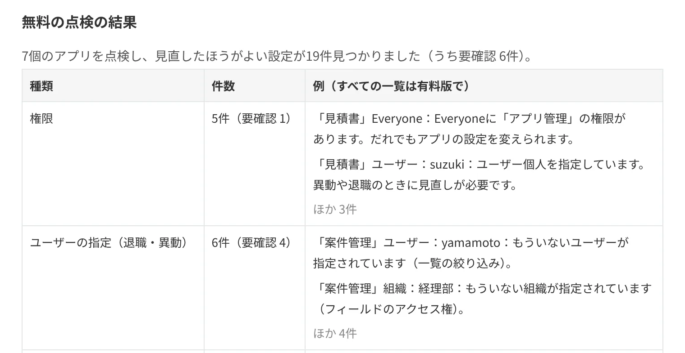
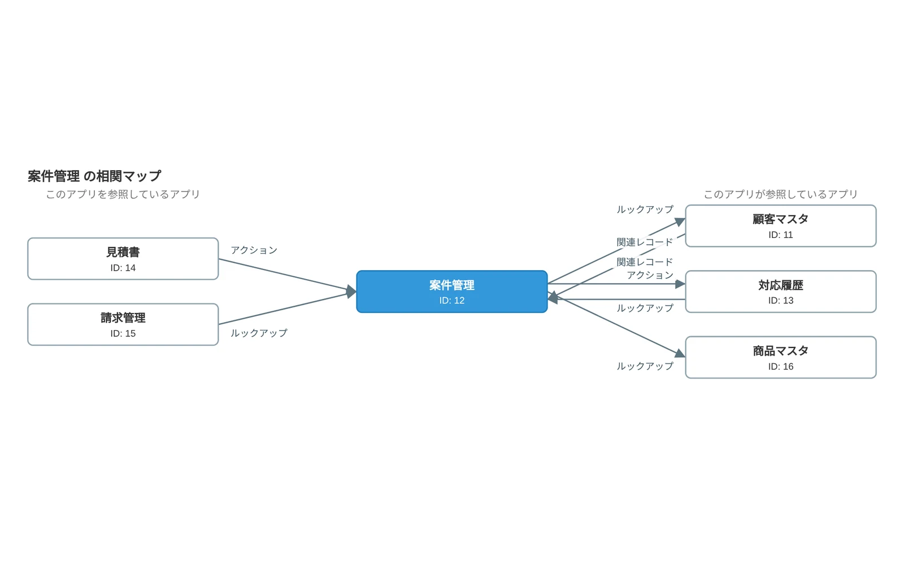

年に1回の棚卸しで、全アプリの権限・使われていないアプリ・退職した人の指定を、画面で1つずつ確かめている。
ボタン1つで全アプリを点検し、見直したほうがよい設定の件数と例を表示します（無料）。有料版では、すべてを1つのExcelにまとめ、前回の点検から変わったところも一覧にします。

kintone管理者のための点検プラグイン
プラグインを入れてボタンを押すだけで、全アプリの権限の注意点、退職した人が残っている設定、使われていないアプリ、ガバナンスガイドラインの点検項目を、件数と例で表示します。
すべての一覧とExcelの点検台帳は有料版（30日間無料）。1つのアプリを詳しく調べる無料のプラグインも6本あります。
点検は無料・申し込み不要データは外部に送信しません設定やレコードを変更しません
年に1回の棚卸しで、全アプリの権限・使われていないアプリ・退職した人の指定を、画面で1つずつ確かめている。
ボタン1つで全アプリを点検し、見直したほうがよい設定の件数と例を表示します（無料）。有料版では、すべてを1つのExcelにまとめ、前回の点検から変わったところも一覧にします。

監査や社内の確認のたびに、アプリごとの権限を画面で1つずつ確かめて、表にまとめている。
 権限チェッカーなら
権限チェッカーなら
アプリ・レコード・フィールドの権限を、1つの画面に一覧で表示します。そのままCSVに保存できます。

担当者の交代や監査のたびに、アプリの設定画面を見ながら、設計書を手で書いている。
フィールド・一覧・プロセス管理・通知・権限・カスタマイズまで、8シートのExcel設計書を自動で作成します。

アプリを直す前に、つながっているアプリと、どのフィールドでつながっているのかを確かめたい。
 アプリ相関マップなら
アプリ相関マップなら
ルックアップ・関連レコード一覧・アクションでつながるアプリを、設定のある場所と一緒に図で表示します。参照している側と、参照されている側の両方が分かります。

退職者が出るたびに、その人が入っていそうなアプリの設定画面を1つずつ開いて確かめている。
アクセス権・プロセス管理・通知・一覧の条件などに出てくる人を一覧にします。退職した人や、なくなった組織の指定には印が付きます。

フィールドを消そうとしたらエラーになった。どのアプリのどのフィールドが使っているのか分からない。
計算式・一覧・権限・通知・JavaScriptや、ほかのアプリのルックアップなど、そのフィールドが使われている場所を一覧にします。削除を止めている設定には★が付きます。

検証用のアプリで直した内容を本番に反映した。アクセス権や通知の設定漏れがないか、画面を見比べて確かめている。
 アプリ設定の比較なら
アプリ設定の比較なら
2つのアプリの設定を比べて、フィールド・一覧・アクセス権・プロセス管理・通知などの違うところだけを一覧にします。

サイボウズの「kintoneガバナンスガイドライン」でも、アプリの定期的な棚卸しや、重要なアプリの設計資料の作成がすすめられています。
無料のプラグイン（6本）
0円 ずっと無料
1つのアプリを詳しく調べて、資料にします。
無料の点検
0円 申し込み不要
全アプリをまとめて点検し、見直したほうがよい設定の件数と例を表示します。
有料版（棚卸し・変更監視パック）
月額3,300円から 30日間無料
点検の結果を、すべての一覧とExcelの点検台帳にまとめます。
アプリが少なく、気になるアプリを1つずつ調べれば足りる場合は、無料のプラグインと無料の点検だけで、ずっとお使いいただけます。
どれも、kintoneのスタンダードコース・ワイドコースで利用できます（ライトコースはプラグインに対応していません）。
設定の読み取りから資料の作成まで、kintoneとブラウザの中だけで処理します。社外のサーバーは使いません。
設定画面はありません。プラグインをkintoneに読み込み、アプリに追加すれば、一覧画面にボタンが表示されます。
全アプリの点検（件数と例）と、6つのプラグインは無料です。すべての一覧とExcelの点検台帳は有料版で、30日間無料で試せます。
| プラグイン | できること | 書き出し | 料金 |
|---|---|---|---|
| アプリ・レコード・フィールドの権限を、1画面で一覧表示 | CSV | 無料 | |
| アプリの設定から、8シートのExcel設計書を作成 | Excel | 無料 | |
| ルックアップ・関連レコード・アクションでつながるアプリを図で表示 | PNG・CSV | 無料 | |
| 設定に出てくるユーザー・組織・グループを一覧にし、退職者やなくなった組織の指定を見つける | CSV | 無料 | |
| フィールドが使われている場所（計算式・一覧・権限・通知・ほかのアプリのルックアップなど）を一覧にする | CSV | 無料 | |
| 2つのアプリ（本番と検証、コピー元とコピー先）の設定の違いを一覧にする | CSV | 無料 | |
| 棚卸し・変更監視パック | 全アプリを点検。件数と例は無料。すべての一覧と点検台帳（Excel）、前回からの変更点は有料版 | Excel | 点検は無料 有料版 月額3,300円から |
プラグインの読み込みには、kintoneシステム管理者の権限が必要です。
プラグインを使わずに確認する方法も含めて、作業の手順をまとめています。